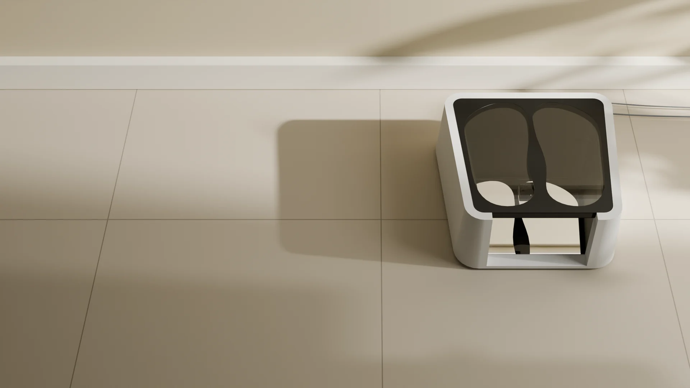
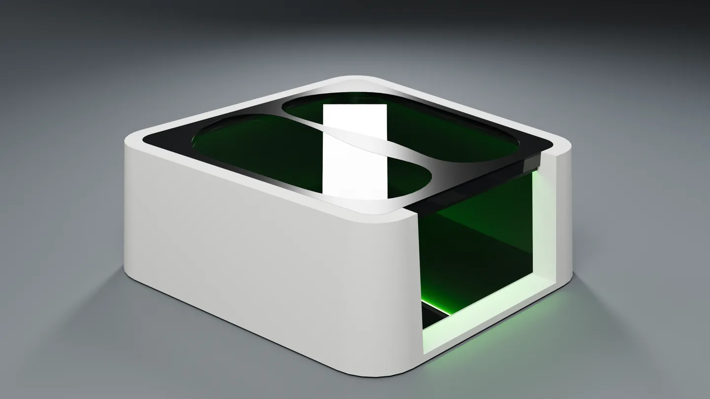
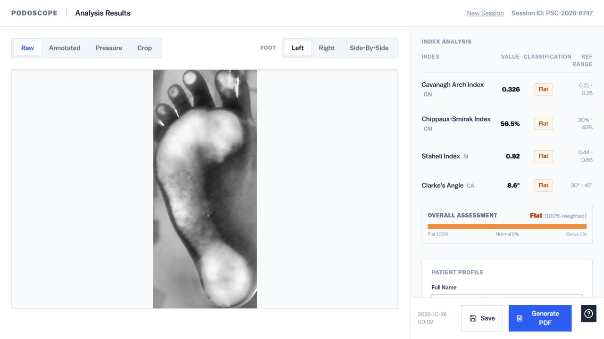
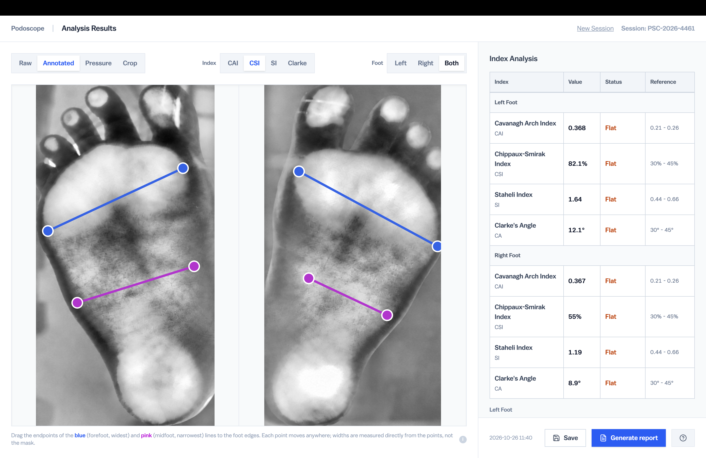
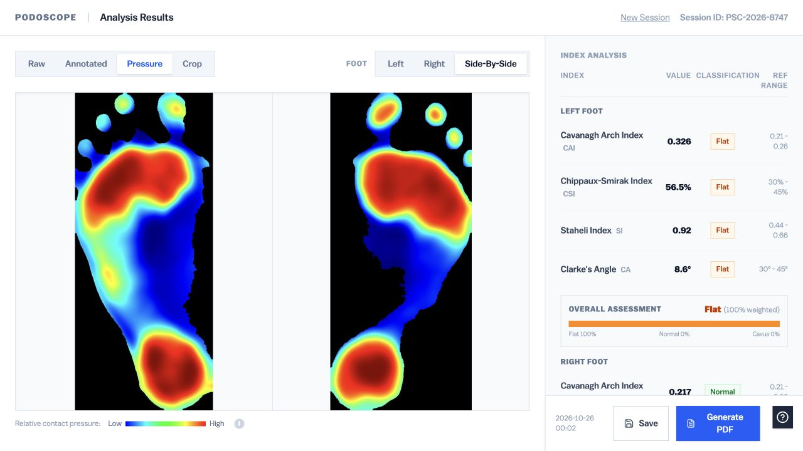

Scroll down to advance the product render and scroll up to reverse it. The sequence holds still when scrolling stops.

Podoscope
A low cost smart device for foot imaging and semi-automatic arch index measurement and analysis.
This project explored how foot imaging and computed measurements to assess high and low arches, bunions, and other foot conditions could be provided in an easy to use and affordable form factor.
Designed for and prototyped at BIOMADE Lab at BITS Pilani Goa Campus
The patient stands on the platform while the device captures an illuminated image of the soles under body weight. The mirror underneath lets the operator get a quick look at the footprint when a detailed analysis is not needed.

Proposed exterior
Product Design 1 of 3
Reducing the Step Height
The earlier prototype was tall and difficult to step onto without assistance. Reducing the platform height became a priority. The enclosure’s outward draft gives the form a broader visual base and a sense of stability.
Product Design 2 of 3
Capturing Both Feet
An ultrawide camera beneath the platform captures both feet within the available height. The mirror provides a quick visual check of the footprint without opening the analysis software.
Product Design 3 of 3
Foot Placement and Privacy
The foot-shaped openings indicate where to stand. The surrounding cover is designed to block the camera’s view of the area above the feet, protecting the user’s modesty during capture.
Software 1 of 4
From Capture to Analysis
Live preview helps the operator check positioning before capture. The captured image can then be reviewed, cropped, and analysed in the accompanying software.

Software 2 of 4
Adjustable Measurements
The software calculates the Cavanagh Arch Index, Chippaux-Smirak Index, Staheli Index, and Clarke’s Angle. The operator can adjust measurement points and review each result against its reference range.

Software 3 of 4
Comparing Both Feet
Review the left and right foot side by side. A colour map shows differences in image intensity, while a weighted summary brings the index classifications together for the practitioner’s review.

Software 4 of 4
Reports and Records
Save a session with patient details and clinical notes, then generate a PDF report containing the foot images, measurements, and assessment summary. A reference guide accompanies the results.